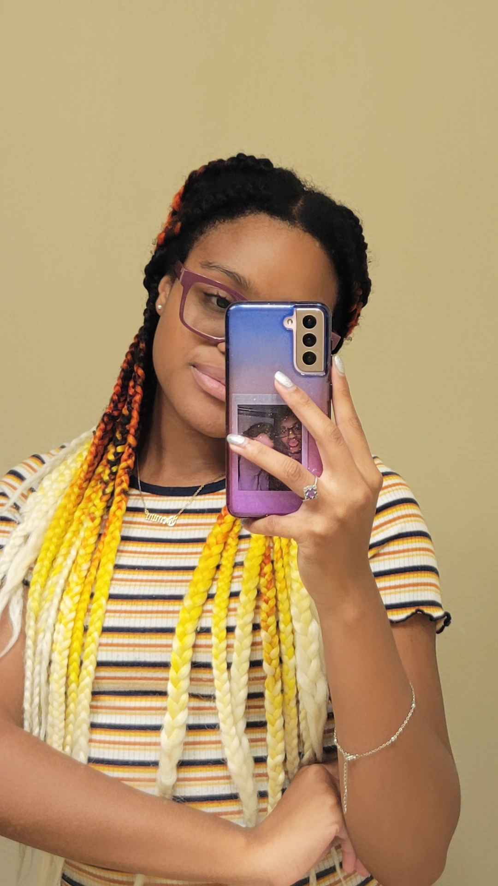

Welcome to my personal website!
|  |
Hi, my name is Kayloni and this is my personal website. I am very new to coding and wanted a place to track my journey. What is a better way then putting it on a personal website, I built myself?! |
Get to know me by things I like!
Roses are my favorite flowers. I know roses mostly mean romace and people tied to them are romantic but I have a different meaning. Roses to mean represent life and care. You give roses to a bunch of people in your life and it shows that whoever you give it you, you care for them. They are also just really pretty.

Yes, I am a gamer girl. I love playing on all platforms but I am mainly a PC girl. I don't have lots of gamer friends so I tend to play a lot of RPG games. I like to play games that have lots of goals. I am goal achiever and like to practice my self-determism while playing.
I am a very social person. I love hanging out with friends and talking to them about anything. I think that friends are an important aspect to life because they support you and give you breaks from reality in awhile. As much as I am social, I like to have small groups of friends that I am really close to.